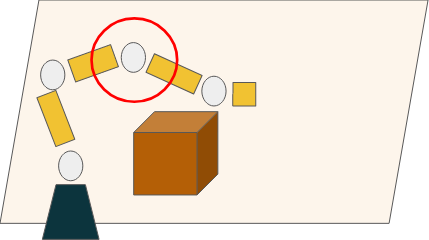
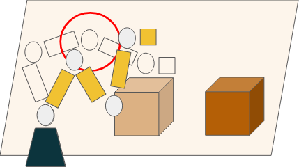
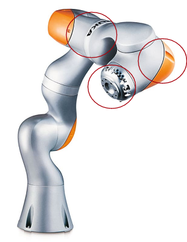

Impact-Aware Manipulation
Extending non-prehensile hitting beyond the end-effector, using any link of the arm to exploit its higher effective inertia.
Humans don't only push objects with their fingertips — we use elbows, forearms and the backs of our hands. This paper extends the robot skill of manipulation through hitting in the same spirit: instead of always striking with the end-effector, the robot makes contact using other links along its kinematic chain. Because a robot's effective inertia is higher at joints closer to its base, hitting with those links lets it move heavier objects than an end-effector strike could.
The work builds on hitting flux — a scaled post-impact object speed derived from collision mechanics that couples the robot's directional effective inertia (λh), its contact speed and the object mass. Since a link's effective inertia depends on the configuration of the joints before it in the chain, the joints ahead of a chosen hitting link can be rearranged to raise the inertia at the contact point — without changing that link's Cartesian velocity.
On a simulated 7-DoF KUKA LBR iiwa, focusing on joints 5, 6 and 7, a well-chosen link produces markedly stronger hits: the directional inertia when striking with joint 6 (3.9 kg) is roughly 56% higher than with joint 7 (2.5 kg), letting the robot impart more momentum to the same object. This is preliminary work; ongoing extensions learn a distribution over feasible hitting configurations to warm-start the optimisation.

Proof of concept — approach

Proof of concept — impact

Candidate hitting joints (5, 6, 7)
Hitting with the end-effector
Hitting with joint 6 — higher inertia
Reachable workspace across joints